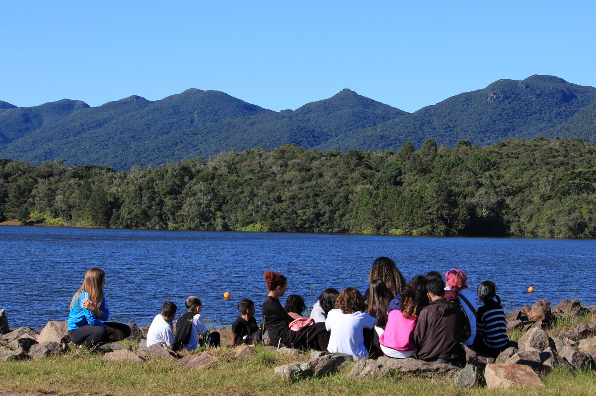
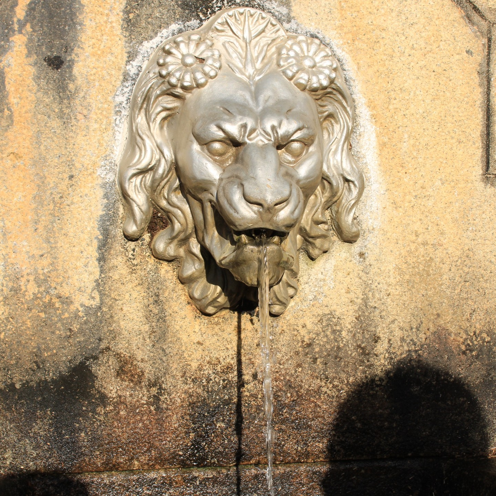

Aprendem sobre a educação socioambiental, sobre sustentabilidade, costumam aprender sobre agricultura, e fazem passeios para desenvolver mais o estudo dos alunos do projeto, eles apresentam sobre o projeto para outros alunos tbm.
Cultivando Saberes é um Projeto para espandir mais o pensamento do aluno sobre o mundo e ensina as crianças a cuidar melhor do mundo em que vivemos.
Passeios e suas importancias
Eles fazem passeios para os alunos do projeto conhecerem diversas formas de ajuda e aprender mais sobre o meio ambiente.
Por exemplo, O passeio ao museu planeta agua onde aprendemos sobre os vários usos da água, suas características e importância fundamental para a vida na Terra, além da necessidade de maiores cuidados com ela! Um museu interativo no qual os estudantes se divertiram bastante.
entre outros como o passeio ao centro de educação socioambiental Mananciais da Serra, onde os alunos percorreram as margens das represas Piraquara 1 e Piraquara 2, Onde são responsáveis por 60% do abastecimento de água de Curitiba e RMC, além do Reservatório do Carvalho, primeiro reservatório de abastecimento de água da região.
Visita ao Centro de Educação Socioambiental Mananciais da Serra (CEAM - SANEPAR), nos dias 1 e 2 de junho.
Muita alegria e aprendizado em visita ao CEAM. Em dias típicos de outono, percorremos as margens das represas Piraquara 1 e Piraquara 2, responsáveis por 60% do abastecimento de água de Curitiba e RMC, além do Reservatório do Carvalho, primeiro reservatório de abastecimento de água da região.
Lugares onde os alunos do Projeto ja visitaram
Centro de Educação Socioambiental Mananciais da Serra

museu planeta agua
Reservatório do Carvalho

Como tudo começou ?
Neste mesmo dia, há dois anos, o secretário estadual de Agricultura e Abastecimento Norberto Ortigara foi até o colégio Leôncio Correia para plantar duas árvores em comemoração ao Dia da Árvore. Então começou a conversa para um possível projeto de tornar a escola um centro de referência em sustentabilidade socioambiental. O professor Gabriel colocou o projeto no papel e o secretário pediu que o IDR-Paraná prestasse a assessoria necessária. Foi então que nasceu o “Cultivando Saberes: Educação Socioambiental Para Escolas Sustentáveis”.
O projeto participou do desafio Escolas Sustentáveis da Organização das Nações Unidas (ONU) e venceu como o melhor projeto do Brasil. Graças a premiação recebeu um investimento de 120 mil reais que deveriam ser investidos em obras com base na sustentabilidade. Projeto pronto e dinheiro na mão. Mas aí veio o grande desafio: A Pandemia. O colégio fechou e os alunos passaram a ter aulas de forma online. Mesmo assim o professor Gabriel continuou indo até o colégio para dar sequência às obras. “Nós não paramos. Mesmo com a pandemia estávamos sempre aqui, sem deixar de atender os alunos é claro, mas conseguimos dar sequência.
Segundo o diretor do colégio, professor Marcelo Monteiro, quando o projeto estava em andamento foi possível perceber o quanto a escola estava atrasada e o quanto podiam evoluir em sustentabilidade. “Quando o professor Gabriel me trouxe este projeto eu assinei de primeira e a escola que somos hoje não é a mesma de dois anos atrás e nem podemos mais ser” afirma.